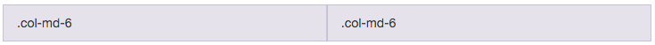
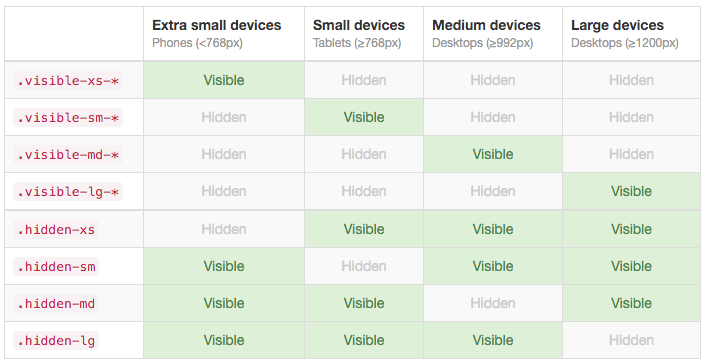

Web Hackthon Seminar
7
UI framework/React Router/Webpack HMR
UI framework
Bootstrap
使用 cdn 來載入
<link rel="stylesheet" href="https://maxcdn.bootstrapcdn.com/bootstrap/3.3.6/css/bootstrap.min.css">Grid
用格子的方式來排版
Container
- .container：在 break point 調整寬度
- .container-fluid：流動式的調整寬度
裡面會放一行行的 row
<div class="container">
<div class="row">
...
</div>
</div>
一個 row 可以分成 12 格
<div class="row">
<div class="col-md-1">.col-md-1</div>
<div class="col-md-1">.col-md-1</div>
<div class="col-md-1">.col-md-1</div>
<div class="col-md-1">.col-md-1</div>
<div class="col-md-1">.col-md-1</div>
<div class="col-md-1">.col-md-1</div>
<div class="col-md-1">.col-md-1</div>
<div class="col-md-1">.col-md-1</div>
<div class="col-md-1">.col-md-1</div>
<div class="col-md-1">.col-md-1</div>
<div class="col-md-1">.col-md-1</div>
<div class="col-md-1">.col-md-1</div>
</div>
<div class="row">
<div class="col-md-8">.col-md-8</div>
<div class="col-md-4">.col-md-4</div>
</div>
<div class="row">
<div class="col-md-4">.col-md-4</div>
<div class="col-md-4">.col-md-4</div>
<div class="col-md-4">.col-md-4</div>
</div>

<div class="row">
<div class="col-md-8">.col-md-6</div>
<div class="col-md-4">.col-md-6</div>
</div>
Responsive

Bootstrap 的 theme
與 React 結合使用
安裝
npm install --save classnames
可以方便地去組合出 className
import classNames from 'classnames';
classNames('foo', 'bar'); // => 'foo bar'
classNames('foo', { bar: true }); // => 'foo bar'
classNames({ 'foo-bar': true }); // => 'foo-bar'
classNames({ 'foo-bar': false }); // => ''
classNames({ foo: true }, { bar: true }); // => 'foo bar'
classNames({ foo: true, bar: true }); // => 'foo bar'
// lots of arguments of various types
classNames('foo', { bar: true, duck: false }, 'baz', { quux: true });
// => 'foo bar baz quux'
// other falsy values are just ignored
classNames(null, false, 'bar', undefined, 0, 1, { baz: null }, '');
// => 'bar 1'
或是使用 React Bootstrap
但我個人不太建議
- 還沒 1.x (Under active development - APIs will change)
- 1.0.0 Roadmap 差得太多
- 東西太多過於複雜
js 相關的 UI component
建議選用較小型好 debug 的套件
或是自己把 3rd party api 包成 component
另外有不少直接用 React 實作的 UI framework
React Router
前幾天發生的事..
總之 taion 取得了 react router publish right
可喜可賀
每一個前端 framework 都會有個 router
- React Router
- Angular New Router
- Angular ui-router
- Ember.Router
- vue-router
- aurelia-router
為什麼需要前端 Router
- Single Page Application 的內容不只 Single Page
- 需要根據 Url 不同給不同內容
- 決定要切換至哪頁通常是反映使用者前端互動
- 方便 Ajax 與模組化
- Code Splitting
History
瀏覽器的歷史紀錄
也就是讓你可以按上一頁下一頁的東西
移動 current 的方式
window.history.back(); // 回上一頁
window.history.forward(); // 回下一頁
window.history.go(-1); // 前兩頁
主要有兩種操作 history 的方式
- Hash History
- Browser History
Hash History
// 網址 # 後面的 string 可以藉由 window.location.hash 去 get, set
window.location.hash = '#/2';
Browser History
// HTML 5
// 新增一個 entry
// pushState(state, title, url);
window.history.pushState(null, null, 'hello');
// 取代目前的 entry
// replaceState(state, title, url);
window.history.replaceState(null, null, 'hello');
// 事件
window.addEventListner('popstate', function() {
// 歷史紀錄被更動
});
React Router 底層有一個實作了跨瀏覽器的 history library
安裝
npm install --save react-router
把 Router render 到畫面上
而必須在 Router 裡面定義 Routes
import React from 'react';
import { render } from 'react-dom';
import { Router, Route, browserHistory } from 'react-router';
// 把 Router render 到畫面上
render(
<Router history={browserHistory}>
<Route path="/" component={App}>
<Route path="about" component={About}/>
<Route path="users" component={Users}>
<Route path=":userId" component={User}/>
</Route>
<Route path="*" component={NoFound}/>
</Route>
</Router>
, document.getElementById('root'));
// Router 需要有一個 history prop 傳入，通常使用 browserHistory
<Router history={browserHistory}>
<Route path="/" component={App}>
<Route path="about" component={About}/>
<Route path="users" component={Users}>
<Route path=":userId" component={User}/>
</Route>
<Route path="*" component={NoFound}/>
</Route>
</Router>
// Route 可以指定 path 跟 component
<Route path="/" component={App}>
{/* /about 會 render <App><About /></App> */}
<Route path="about" component={About}/>
{/* /users/:userId 會 render <App><Users><User /></Users></App> */}
<Route path="users" component={Users}>
<Route path=":userId" component={User}/>
</Route>
{/* 到最後都沒有 match 出現 404 畫面 */}
<Route path="*" component={NoFound}/>
</Route>
其他值得一提的 Route 設定
- IndexRoute
- Redirect
切換頁面的方法
Link
// Route 可以指定 path 跟 component
import { Link } from 'react-router';
//....
render() {
return (
<div>
<Link to="/about">點擊到 About 頁面</Link>
</div>
);
}
router Context
//....
class Users extends Component {
// 重要！需要宣告 contextTypes 否則 router 不會被傳進 this.context
static contextTypes = {
router: PropTypes.object.isRequired
};
handleClick() {
this.context.router.push('/about');
}
render() {
return (
<div>
<button onClick={this.handleClick.bind(this)}>About</button>
</div>
);
}
}
路徑參數 this.props.params
// path="/users/:userId"
//....
class SingleUserPage extends Component {
render() {
return (
<div>
{`User: ${this.props.params.userId}`}
</div>
);
}
}
Advanced Webpack
Hot Reload
“Hot Module Replacement” (HMR) is a feature to inject updated modules into the active runtime.
It’s like LiveReload for every module.
var webpack = require('webpack');
module.exports = {
...
plugins: [ // 要加這些 plugin
new webpack.HotModuleReplacementPlugin(), // => 啟用 HMR
new webpack.NoErrorsPlugin() // => 不要把錯誤的 Code 打包進來
],
};
Watch v.s. Hot Module Replacement
React Hot Reload


搭配 Hot Module Replacement 使用 React Transform
要多安裝的東西
// 乍看好像要裝一堆東西，但很多都很小
npm install --save-dev babel-preset-react-hmre express
webpack webpack-dev-middleware webpack-hot-middleware.babelrc 要在開發環應啟用 hmre
{
"presets": ["react", "es2015", "stage-0"],
"env": {
"development": {
"presets": ["react-hmre"]
}
}
}加一個 devServer
var path = require('path');
var express = require('express');
var webpack = require('webpack');
var config = require('./webpack.config.dev');
var app = express();
var compiler = webpack(config);
app.use(require('webpack-dev-middleware')(compiler, {
noInfo: true,
publicPath: config.output.publicPath
}));
app.use(require('webpack-hot-middleware')(compiler));
app.get('*', function(req, res) {
res.sendFile(path.join(__dirname, 'index.html'));
});
app.listen(3000, 'localhost', function(err) {
if (err) { return console.log(err); }
console.log('Listening at http://localhost:3000');
});還有一個 webpack.config.dev.js
var path = require('path');
var webpack = require('webpack');
module.exports = {
devtool: 'cheap-module-eval-source-map',
entry: [
'webpack-hot-middleware/client', // 這多一個 hot reload 的 code entry
'./src/index'
],
output: {
path: path.join(__dirname, 'dist'),
filename: 'bundle.js',
publicPath: '/dist/'
},
plugins: [
new webpack.HotModuleReplacementPlugin(),
new webpack.NoErrorsPlugin()
],
module: {
loaders: [{
test: /\.js$/,
loaders: ['babel'],
include: path.join(__dirname, 'src')
}]
}
};這樣就 ok 了！
程式進入點請寫在 src/index.js
也需要有一個 html 放在 project 根目錄
用下面的指令啟用開發用 server
node devServer.js練習
THE END
Thanks for listening